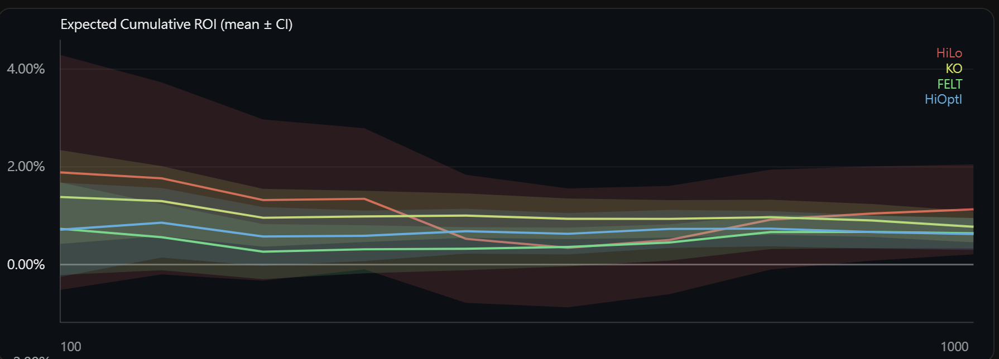
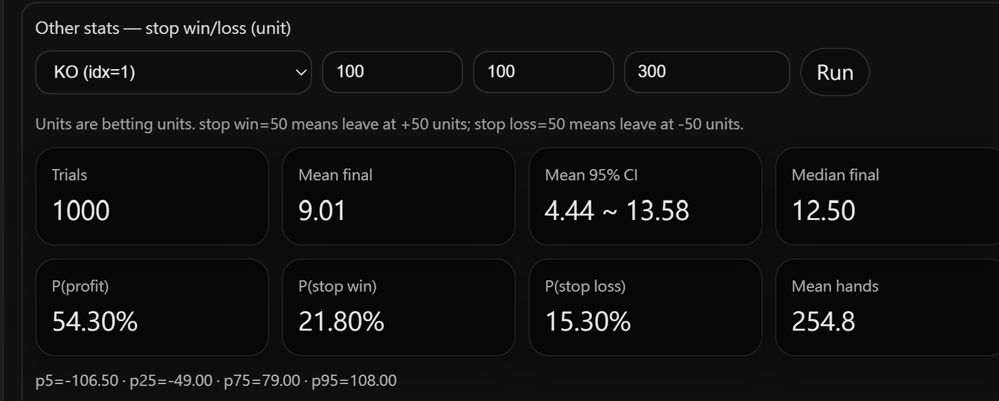

模擬驗證範例
Sim 的核心用途之一，是用統計數據驗證算牌策略在特定設定下是否有優勢。以下兩個範例說明如何從模擬結果判斷策略是否有效，以及如何用 Session 統計輔助制定停損停利設定。
累積 ROI 信賴區間
以下圖示比較了 Hi-Lo、KO、FELT、Hi-Opt I 四套算牌系統，各自搭配對應的 Bet Ramp，從 100 局到 1000 局的累積 ROI 走勢，每條線附帶 95% 信賴區間（CI）。模擬條件為 1000 個 trial，每個 trial 跑 1000 局。

重點在於 CI 的下界。95% CI 下界全程高於 0%，代表在這四套系統各自搭配的 Bet Ramp 設定下，即使取最保守的統計估計，累積 ROI 仍為正值。這表示在模擬所用的桌規和穿透率條件下，策略在統計上具有優勢。
值得注意的是，四套系統各自使用不同的 Bet Ramp，因此這張圖的目的是分別驗證每套系統的策略是否有效，而不是用來比較哪套系統的表現較佳。若要比較系統之間的差異，需在相同 Bet Ramp 條件下另行模擬。
KO Session 停損停利統計
除了累積 ROI 之外，Sim 也可以模擬加入停損停利條件的 Session 結果，幫助評估資金管理設定的合理性。以下範例使用 KO 系統（idx=1），設定停損與停利各 100 unit、每場最多 300 局，模擬 1000 個 session。

結果顯示 Mean final 為 +9.01 unit，95% CI 為 4.44～13.58，完全在正數範圍。P(profit) 為 54.3%，P(stop win) 21.8% 高於 P(stop loss) 15.3%。這代表在這套 KO 算牌、Bet Ramp 與停損停利設定下，session 統計上是獲利的，並具有一定的統計信心。
透過調整停損停利的數值再重新模擬，可以比較不同資金管理設定對結果分布的影響，找出符合自己風險承受度的設定組合。